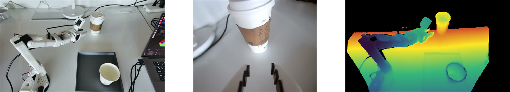

01
Capture & merge
Record standard LeRobot RGB or Orbbec RGB-D data, then merge multiple datasets while rewriting indices, metadata, videos, and depth sidecars.
An end-to-end toolkit for collecting, merging, auditing, enriching, and iteratively improving multimodal datasets for vision-language-action models.

GLOBAL · WRIST · DEPTHWHY IT MATTERS
“From capture to feedback, every dataset decision stays auditable.”
Loop Engineering for VLAnything connects deterministic checks, semantic review, trajectory language, and recovery-driven policy iteration.
CORE CAPABILITIES
Work across RGB, RGB-D, robot actions, states, metadata, task semantics, language annotations, and human feedback—without modifying the source dataset.
Record standard LeRobot RGB or Orbbec RGB-D data, then merge multiple datasets while rewriting indices, metadata, videos, and depth sidecars.
Check RGB, depth, actions, states, and metadata. Deterministic failures become drop; uncertain episodes stay review; source data is never deleted.
Build task profiles, plug in semantic evaluators, and generate validated subtask, event, state, and summary language sidecars.
Capture human recovery and correction data with action provenance, build weighted feedback datasets, and gate policy promotion and deployment.
A SIMPLE WORKFLOW
Record RGB through official LeRobot or collect Orbbec RGB-D with lossless uint16 depth sidecars, then merge real datasets.
Run deterministic checks over video, depth, actions, states, timestamps, and metadata; triage episodes into keep, review, or drop.
Optionally add task profiles, semantic progress evaluation, and time-aligned trajectory language after quality review.
Collect human recovery and correction feedback, build a weighted training set, then run gated policy iterations.
QUICK START
Python 3.12+ is recommended for the Orbbec RGB-D collection overlay. Install FFmpeg for full video decoding and trimming, then follow the README for the capture, audit, enrichment, or feedback path you need.
Open full documentation Plugin contracts$ git clone https://github.com/dsta022/Loop-Engineering-for-VLA.git
$ cd Loop-Engineering-for-VLA
$ conda create -n vla_data_check python=3.12 -y
$ python -m pip install -e .
# Add FFmpeg for full decode and video trimming
OPEN RESEARCH TOOLING